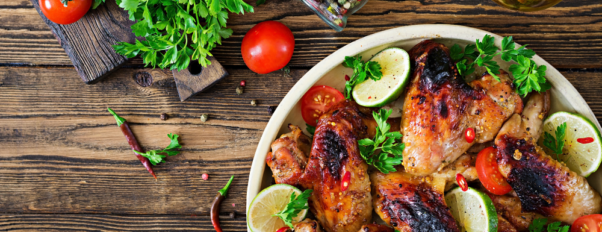

Andrew Douglas Rea, also known as Babish, started a YouTube career where his first ideas were to make recipes that are taken from famous scenes in movies and series.
He tried out recipes like the crabby patty from “SpongeBob”, real Philly Cheesesteak from "Creed", Room Service Beef Wellington from Mad Men, etc.
As babish got more and more popular he started series with different categories like:
This are the 5 easy to make recipes that i found on binging with babish website and youtube channel. We'll start from the easiest and tasty to make to alittle harder but tastier recipes:
